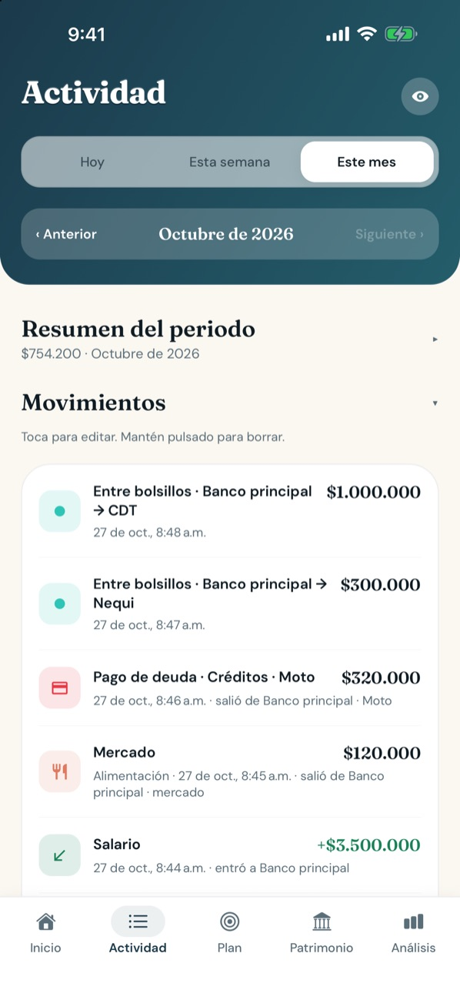
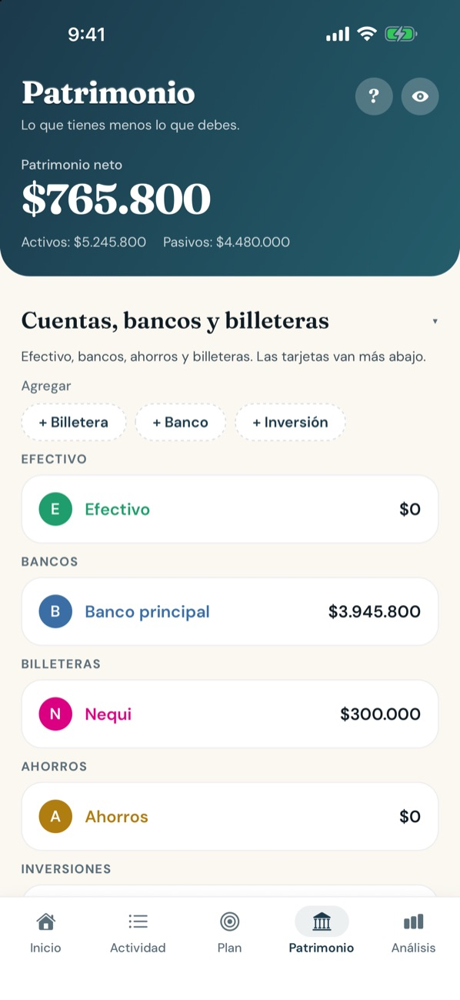

Todo tu dinero, sin complicarte
Funciona en pesos colombianos y en dólares, en español y en inglés.
Anota en segundos
Escribe o dicta “almuerzo 18 mil” y Rumi lo pone en su categoría.
Gastos hormiga
El café, el domicilio, la suscripción: mira cuánto suman los gastos pequeños.
Tus datos, tuyos
Todo queda cifrado en tu teléfono. Sin servidor, sin anuncios y sin rastreo.

Anota un gasto antes de guardar el celular
Escribe cuánto y en qué —“uber”, “mercado”, “fútbol”— y Rumi lo archiva en tu categoría. Si la categoría no existe, la crea. Si corriges una, aprende para la próxima.
- Dicta el gasto con el micrófono.
- Plantillas para café, domicilio, transporte, salario y ahorro.
- Gastos, ingresos, pagos de deudas y movimientos entre cuentas.

Topes que te cuidan, recordatorios que llegan a tiempo
Ponle un tope al mes a cada gasto que quieras cuidar y mira cuánto te queda antes de pasarte.
- Aviso un día antes de cada cuota de tus créditos.
- Rumi detecta pagos que se repiten, como Netflix o el arriendo, y te sugiere el recordatorio.
- Si ya pagaste, no te vuelve a avisar.

Cada peso, con su día y su cuenta
Mira tus movimientos de hoy, de la semana o del mes, y cuánto te costó cada categoría mes a mes. Toca para editar, mantén pulsado para borrar.

Lo que tienes menos lo que debes
Bancos, billeteras como Nequi, ahorros, inversiones, tarjetas y créditos en un solo lugar, con tu patrimonio neto arriba.
- Los gastos solo salen de cuentas con saldo.
- Créditos con sus cuotas y lo que falta por pagar.
Pregunta como le preguntarías a un amigo
Rumi te responde con tus números y te muestra los movimientos detrás de cada respuesta. Todo se calcula en tu teléfono.

Montos de ejemplo.
Por qué Rumi
Sin cuenta ni banco
No pide correo ni contraseña, y no se conecta a tu banco. Abres y anotas.
Cifrado en tu teléfono
Tus datos se guardan cifrados (AES-256) y no van a ningún servidor. Bloqueo con huella o rostro, y un ojo para ocultar los montos.
Android y iPhone
La misma app en los dos. Exporta tus datos en CSV o JSON cuando quieras.
Preguntas frecuentes
¿Rumi es gratis?
Sí. Hoy Rumi es gratis y no tiene anuncios.
¿Dónde quedan mis datos?
En tu teléfono, cifrados. Rumi no tiene servidor y no envía tus movimientos por internet. Más detalle en la política de privacidad.
¿Tengo que conectar mi banco?
No. Tú anotas tus movimientos, y Rumi nunca te pide claves del banco.
¿Funciona en dólares?
Sí. Al empezar eliges pesos colombianos o dólares, y la app funciona en español o en inglés según tu teléfono.
¿Qué pasa si cambio de celular?
En Ajustes, “Exportar respaldo” guarda un archivo con tus datos que puedes restaurar en el teléfono nuevo. En iPhone, una copia cifrada de iCloud también los trae.
¿Cuándo llega a la App Store y a Google Play?
Android está en prueba cerrada en Google Play y puedes unirte hoy. iPhone llega muy pronto.
Empieza a ver en qué se te va la plata
Rumi está en prueba cerrada en Google Play. Únete con tu celular Android y tu cuenta de Google.